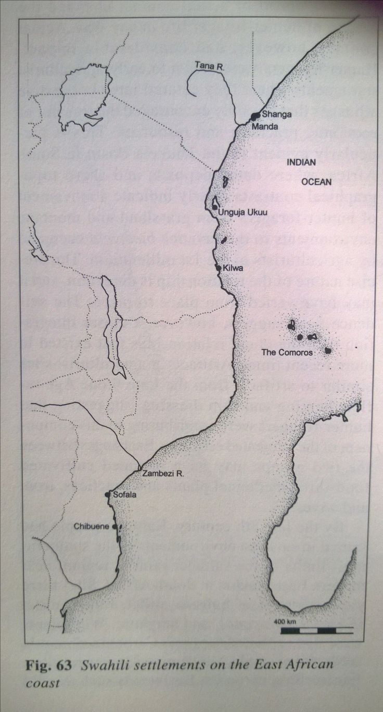

PEOPLE · IDENTITY · BELONGING
Many stories.
A living heritage. A continent of stories.
The African Jewish
Heritage Centre
Remember. Reclaim. Restore.
Enter the CentreAFRICAN JEWISH HERITAGE01 — DISCOVER
Welcome to the AJHC
A story of history, identity, culture, memory and belonging.
Across the African continent and its diaspora are stories of Jewish communities, ancient connections, traditions, journeys and lived experiences that deserve to be remembered, documented and celebrated.
The African Jewish Heritage Centre is a space dedicated to preserving and reclaiming overlooked histories and restoring the richness of African Jewish heritage to the wider historical narrative.
Through research, oral histories, cultural preservation, education and community engagement, we bring the past into conversation with the present, creating a living legacy for future generations.
A continent of stories
Explore African
Jewish Heritage
Discover the people, communities, histories, traditions and journeys that form part of the history of the Jewish people in Africa.
Explore the continent
The African Jewish Heritage Map
Every place holds a story.
“I saw two of them in Egypt. They are dark-skinned... and one could not tell whether they keep the teaching of the Karaites, or of the Rabbis, for some of their practices resemble the Karaite teaching... but in other things, they appear to follow the instruction of the Rabbis; and they say they are related to the tribe of Dan.”
— Rabbi Ovadia of Bertinoro, 1488
01
Southern Africa
From Mapungubwe to Great Zimbabwe
02
Eastern Africa
Traders, tribesmen, trailblazers
03
Jews of West Africa
Bilad el-Sudan
THE AJHC JOURNAL
04 / STORIES & PERSPECTIVESThe Unwritten
Chapters.
A CONTINENT OF VOICES
“Biblical Hebrew has no word that means ‘history’ (the closest equivalent is divrei hayamim, ‘chronicles’). Instead it uses the root zachor, meaning ‘memory’.”
— Rabbi Lord Jonathan Sacks

HISTORY & JOURNEYS
Across generations
Across generations
and across waters.

PEOPLE & PROFILES
Lives that leave
Lives that leave
a legacy.
Watch & Listen
Heritage has a voice.
Discover African Jewish heritage through films, interviews, conversations and first-hand accounts.
Films, interviews and first-hand accounts
Our Watch & Listen collection is being prepared. Check back soon.
Our work
Programmes & Initiatives
Preserving heritage. Inspiring leadership. Building the future.
Machaneh Chalutzim — Camp Pioneers
An immersive Jewish leadership and cultural education camp for young people.
Heritage Research & Preservation
Documenting histories through research, oral histories, photography and community knowledge.
Education & Leadership Development
Creating opportunities to engage with heritage and develop leadership skills.
Community Engagement
Building relationships and spaces for cultural exchange and shared learning.
Read & discover
AJHC Publications
“Write this as a memorial in a book...”
Exodus 17:14
DIGITAL ZINES Downloadable editions · Stories · Profiles · Photography
The AJHC Store
AJHC COLLECTIVE / 01
Wear the story.
Carry the heritage.
Every purchase supports the AJHC's work.
STORE PREVIEW — CHECKOUT NOT YET AVAILABLE

IDENTITY / HERITAGE / BELONGING
Let's start a conversation
Get in touch.
Have a question, a story to share, an idea for collaboration or an interest in supporting the African Jewish Heritage Centre? We'd love to hear from you.
info@africanjewishheritagecentre.com